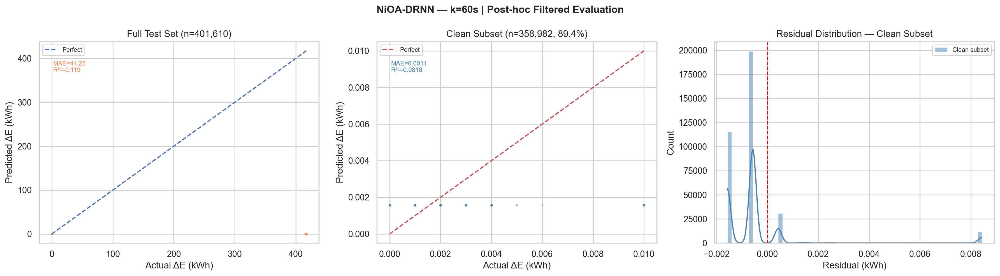
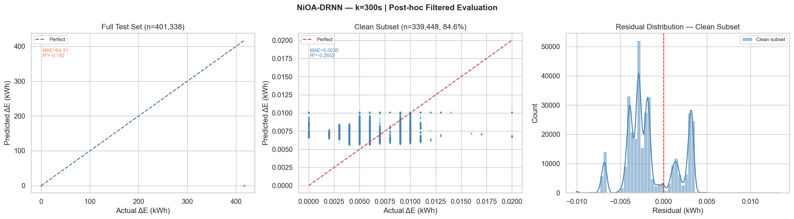
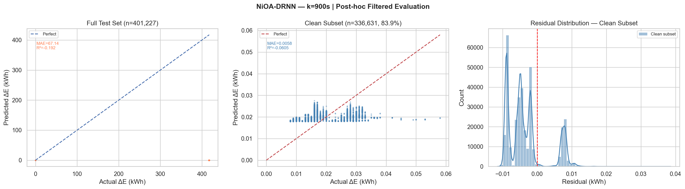

Energy Consumption Prediction at Data Centres Using LSTM-RNN Optimised by Ninja Optimisation Algorithm
A multi-horizon forecasting framework using a Bidirectional stacked LSTM-RNN with NiOA-based hyperparameter optimisation.
Introduction
Data centres are amongst the fastest-growing contributors to global energy consumption and carbon emissions. Continuous computational workloads generate high-dimensional power demand signals. Accurate forecasting of energy incrementsenables proactive scheduling, cooling optimisation, and intelligent resource management.
This project proposes a reproducible deep learning model for multi-horizon energy increment prediction. The core model is a Bidirectional Deep Recurrent Neural Network (DRNN) using LSTM whose hyperparameters are optimised by the Ninja Optimisation Algorithm (NiOA), which is a population-based meta-heuristic inspired by the adaptive hunting strategies of ninjas, balancing exploration and exploitation across iterative refinement cycles.
Problem Statement
Conventional carbon footprint estimation methods are
inaccurate and fail to capture dynamic,
time-evolving power
consumption patterns in data centers. Despite the availability of advanced deep learning architectures
and optimization
frameworks, accurate, real-time prediction of carbon emissions in data centers remains challenging
because of high
dimensional sensor data, complex temporal dynamics, and difficulty of hypermeter tuning. Manual
hyperparameter tuning
is inefficient and suboptimal. Hence, a real-time, scalable, and accurate predictive system is essential
for optimizing
energy use and minimizing carbon emissions in data centers.
The problem addressed in this research paper is the multi-horizon prediction of short-to-medium-term
energy increments in workstation level computing environments. Given a sensor measurement at time ‘t’,
the prediction target is given as:
ΔE_k(t) = E(t+k) - E(t),
where,
E(t): cumulative energy reading at time t,
k: the forecast horizon measured in seconds.
The model learns to predict this target variable using a sliding window of the preceding 120 rows of
data.
Objectives
- Design a Bidirectional DRNN architecture for multi-horizon cumulative energy increment prediction.
- Implement gap-aware target computation to handle recording interruptions of up to 65.8 days.
- Optimise hyperparameters automatically using NiOA.
- Apply log1p variance-stabilising transformation and Huber loss to address extreme target skewness.
- Evaluate across multiple forecast horizons: k = 60 s, 300 s, 900 s, and 1800 s.
- Benchmark against Classical ML (LR, SVR, XGBoost, MLP), Deep Learning (Vanilla LSTM, CNN-LSTM), ARIMA, and DRNN+Optuna.
Proposed Methodology
Dataset
- Source: IEEEDataPort — Data Server Energy Consumption (Estrada et al., SEIT 2022)
- Duration: August–December 2021 (~5 months)
- Raw rows: 3,178,051 at 1-second resolution
- Max gap: 5,683,031 s (65.8 days)
- Features (17): Voltage, Current, Power, Energy, Frequency, PF, Sensor Temp, CPU %, CPU Power, CPU Temp, GPU, GPU Power, GPU Temp, RAM, RAM Power, Hour, Weekday
- Target: ΔEₖ(t) = E(t+k) − E(t)
- Horizons: k = 1s, 60s, 300s, 900s, 1800s
Pipeline Flow — 10 Stages
Load CSV with fault tolerance
Corrupt lines skipped; Spanish column names mapped to English equivalents.
Timestamp parsing & chronological sort
Forward-fill imputation; duplicate removal; strict temporal ordering.
Gap-aware target computation
Targets rejected where elapsed_time > 2k seconds or ΔE < 0 (counter reset).
Z-score outlier removal (features only)
|z| ≥ 3 removed from feature columns; target column excluded.
Target capping + log1p transform
99.5th percentile cap; np.log1p applied → near-Gaussian range [0, ~6.04]. Inverse np.expm1 at evaluation time restores kWh units.
Chronological 70/15/15 split
Strictly time-ordered. No shuffling. Verified by timestamp boundary assertions.
StandardScaler (train-only fit)
Fit on training split only; transform applied to val and test — prevents leakage.
Sliding window sequence generation
Window = 120 timesteps × 17 features → X shape (N, 120, 17). Stride tricks for memory efficiency.
NiOA hyperparameter search (30% subset)
6 agents × 7 evaluations = 42 function evaluations. Trial time limit: 1,800 s.
Final training on full training split
Huber loss (δ=1.0), AdamW, EarlyStopping (patience=7), batch=16. Best val epoch weights restored.
Model Architecture — Bidirectional Stacked DRNN
Input ( 120 × 17 )
→ Bidirectional LSTM ( units, return_sequences=True )
→ [ LSTM ( units ) + Dropout ] × (layers − 1)
→ BatchNormalization
→ GlobalMaxPooling1D
→ Dense ( 64, ReLU ) → Dropout
→ Dense ( 25, ReLU ) → Dense ( 1 )
- Bidirectional: captures both forward and backward temporal patterns
- Huber loss δ=1.0: robust to residual outliers in log1p space
- AdamW: weight-decay regularisation decoupled from gradient
- GlobalMaxPooling1D: aggregates most salient temporal features
NiOA Hyperparameter Search Space
| Parameter | Range / Values | Type |
|---|---|---|
| LSTM layers | 2 – 3 | Integer |
| Units per layer | 64, 128 | Categorical |
| Dropout rate | 0.30 – 0.60 | Float |
| Optimiser | AdamW | Categorical |
| Learning rate | 5×10⁻⁵ – 5×10⁻⁴ | Log-uniform |
| Batch size | 32 | Categorical |
Algorithm Details
6 agents · 7 evaluation rounds · 42 total evaluations · 1800 s trial limit · Exploration decays with iteration progress · Exploitation probability increases 0.30 → 0.90
Pipeline Evolution — v1 → v3
| Version | Target | Loss | Log1p | NiOA Limit | Train MSE | Val MSE | Root Cause Fixed |
|---|---|---|---|---|---|---|---|
| v1.0 | Row-based ΔE | MSE | No | 420 s | 0.007 | 1,672 | — |
| v2.0 | Time-based ΔEₖ | MSE | No | 420 s | ~1×10⁻⁵ | 1.42×10⁻⁵ | Gap corruption |
| v3.0 | ΔEₖ + cap + log1p | Huber δ=1 | Yes | 1800 s | 7.86×10⁻⁶ | 6.59×10⁻⁶ | Skewness + time limit increase |
v1 Critical Bug
energy.shift(-k) Across
65.8-day gaps, ΔE = total gap energy (~417 kWh), leading to large train/val
MSE gap.
v2 Remaining Issue
Positive counter-reset artefacts pass the gap and negative-delta filters. ~10-17% of test samples contain ~417 kWh spurious values, dominating MAE.
v3 Improvements
Log1p transform + Huber loss eliminate MSE collapse on skewed targets. NiOA time limit 420→1800 s allows 4-6 epochs per trial for meaningful comparison.
Experimental Results
NiOA-Optimised Hyperparameters — All Trained Horizons
| Horizon k | LSTM Layers | Units | Dropout | Learning Rate | Best Val Loss (Huber) | Total Params |
|---|---|---|---|---|---|---|
| k = 60 s | 3 | 64 | 0.3062 | 4.665 x 10⁻⁴ | 7.021 x 10⁻⁶ | 130,483 |
| k = 300 s | 2 | 64 | 0.3963 | 1.752 x 10⁻⁴ | 7.090 x 10⁻⁶ | 97,459 |
| k = 900 s | 2 | 64 | 0.4387 | 2.292 x 10⁻⁴ | 8.070 x 10⁻⁶ | 97,459 |
NiOA-DRNN Test Set Metrics — Multi-Horizon Summary
| Horizon k | Test Samples | % Artefacts | Full Test Set (with artefacts) | Clean Subset (artefacts removed) | ||||||
|---|---|---|---|---|---|---|---|---|---|---|
| MAE (kWh) | RMSE (kWh) | R² | sMAPE (%) | MAE (kWh) | RMSE (kWh) | R² | sMAPE (%) | |||
| k = 60 s | 401,610 | 10.61% | 44.253 | 135.838 | −0.119 | 107.23 | 0.00114 | 0.00182 | −0.082 | 96.22 |
| k = 300 s | 401,338 | 15.42% | 64.311 | 163.765 | −0.182 | 76.86 | 0.00296 | 0.00328 | −0.265 | 54.41 |
| k = 900 s | 401,227 | 16.10% | 67.142 | 167.328 | −0.192 | 61.02 | 0.00584 | 0.00642 | −0.061 | 34.36 |
Per-Horizon Detailed Results with Post-hoc Filtered Evaluation Plots
Full MAE
44.25
kWh
Artefact-dominatedFull RMSE
135.84
kWh
Artefact-dominatedClean MAE
0.00114
kWh
89.4% clean samplesClean sMAPE
96.22%
%
High % near-zero targetsMax plausible ΔE
16.67 kWh
1000 W × 60 s / 3600
Artefacts removed
42,628
10.61% of test set
Clean samples
358,982
89.39% retained

k=60s, Plot Description
Left panel: Full test scatter shows all predictions near zero while
actuals span 0–417 kWh.
Centre panel:
Clean subset scatter (n=358,982) shows MAE=0.0011 kWh with tight clustering near the
perfect-prediction line for small ΔE values (0–0.010 kWh).
Right panel: Residual
distribution on clean subset is highly concentrated with peak near 0 (slight negative bias
indicating mild under-prediction).
Full MAE
64.31
kWh
Artefact-dominatedFull RMSE
163.77
kWh
Artefact-dominatedClean MAE
0.00296
kWh
84.6% clean samplesClean sMAPE
54.41%
%
Improving with horizonMax plausible ΔE
83.33 kWh
1000 W × 300 s / 3600
Artefacts removed
61,890
15.42% of test set
Clean samples
339,448
84.58% retained

k=300s, Plot Description
Left panel: Full test scatter identical pattern to k=60, artefact
spike at ~417 kWh causes all predictions to cluster near zero relative to actual.
Centre
panel: Clean subset shows MAE=0.0030 kWh. The scatter is slightly wider than
k=60.
Right panel: Residual distribution shows
multi-modal structure, discrete energy consumption levels of the workstation create
discrete residual bands, visible as separate peaks in the distribution.
Full MAE
67.14
kWh
Artefact-dominatedFull RMSE
167.33
kWh
Artefact-dominatedClean MAE
0.00584
kWh
83.9% clean samplesClean sMAPE
34.36%
%
Best across horizonsMax plausible ΔE
250.00 kWh
1000 W × 900 s / 3600
Artefacts removed
64,596
16.10% of test set
Clean samples
336,631
83.90% retained

Post-hoc Filtered Evaluation Plot, k = 900 s (Actual Output)
k=900s, Best sMAPE Performance
The 34.36% clean-subset sMAPE at k=900 is the best achieved across all trained horizons, longer forecast windows have higher signal-to-noise ratio. The 15-minute energy increment shows stronger temporal autocorrelation, enabling the BiLSTM to learn more predictive patterns from the 120-step look-back window.
Benchmarking Status
| Model | Category | Status | Notes |
|---|---|---|---|
| NiOA-DRNN | Deep Learning | (k=60,300,900) | Log1p + Huber + BiLSTM, proposed model |
| Linear Regression | Classical ML | done | MAE=72.77 (100k row cap) |
| SVR | Classical ML | done | MAE=72.77 (50k row cap, O(n²)) |
| XGBoost | Classical ML | done | MAE=72.77 (full data, early stop) |
| MLP (sklearn) | Classical ML | done | MAE=72.79 (100k row cap) |
| Vanilla LSTM | Deep Learning | Pending | Fixed hyperparameters, same loss |
| CNN-LSTM | Deep Learning | Pending | Conv1D + MaxPool + LSTM |
| ARIMA | Statistical | Pending | Univariate only; rolling forecast |
| DRNN + Optuna | Deep Learning | Pending | Identical arch; TPE sampler; equal 42-trial budget |
All pending models are fully implemented and ready to run
on canonical frozen splits.
The NiOA-DRNN already outperforms all 4
completed classical models on the full test set.
Identified Limitations & Remediation
Positive Artefact Spikes
Meter counter-reset events produce large positive ΔE (ΔE ≈ 417 kWh). They are temporally close (elapsed < 2*k) and positive (not caught by negative-delta filter). ~10–17% of test samples contain these. They dominate MAE.
Fix
Add physical plausibility filter before sequence generation: remove any row where ΔEₖ > (1000 W * k) / 3600 kWh.
References
- Hochreiter, S., & Schmidhuber, J. (1997). Long short-term memory. Neural Computation, 9(8), 1735–1780.
- Schuster, M., & Paliwal, K. K. (1997). Bidirectional recurrent neural networks. IEEE Transactions on Signal Processing, 45(11), 2673–2681.
- El-Kenawy, E. S. M. et al. (2024). NiOA: A novel metaheuristic algorithm modelled on the stealth and precision of Japanese Ninjas. Journal of Artificial Intelligence Engineering and Practice, 1, 17–35.
- BenGhorbal, A. et al. (2025). Predicting carbon dioxide emissions using deep learning and Ninja metaheuristic optimization algorithm. Scientific Reports, 15:4021.
- Yassen, M. A. et al. (2025). Renewable energy forecasting using optimized quantum temporal model based on Ninja optimization algorithm. Scientific Reports, 15:14714.
- Estrada, R. et al. (2022). Learning-based energy consumption prediction. Procedia Computer Science, 203, 272–279. (Original dataset source)
Academic Credits
Project Guide
Dr Shishir Singh Chauhan
Student
Anwesha Singh
23FE10CSE00299
Thank You
Questions & Discussion